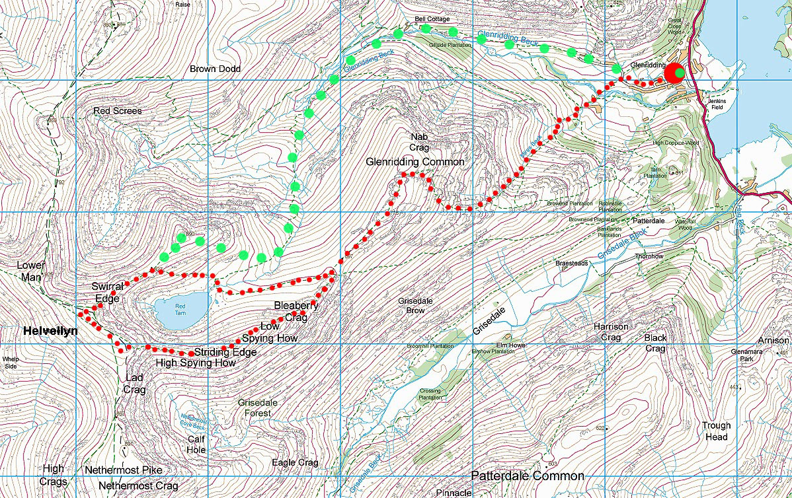

Helvellyn


Height: 978m
Difficulty: medium
Views: a good view of most of the Lake District, from the central Lake District.
Total distance of the climb: 7 miles
Views from the summit: most of the Lake District, from the central Lake District.